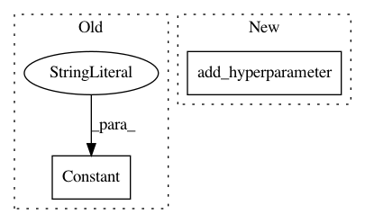

e23bcc6338a3407a163f38ad5b6e8a010286b089,ParamSklearn/components/classification/adaboost.py,AdaboostClassifier,get_hyperparameter_search_space,#Any#,74
Before Change
def get_hyperparameter_search_space(dataset_properties=None):
learning_rate = UniformFloatHyperparameter(
name="learning_rate", lower=0.0001, upper=1, default=0.1, log=True)
algorithm = Constant(name="algorithm", value="SAMME.R")
//base_estimator = Constant(name="base_estimator", value="None")
n_estimators = UniformIntegerHyperparameter(
name="n_estimators", lower=50, upper=500, default=50, log=False)
After Change
name="learning_rate", lower=0.0001, upper=2, default=0.1, log=True))
algorithm = cs.add_hyperparameter(CategoricalHyperparameter(
name="algorithm", choices=["SAMME.R", "SAMME"], default="SAMME.R"))
max_depth = cs.add_hyperparameter(UniformIntegerHyperparameter(
name="max_depth", lower=1, upper=10, default=1, log=False))
return cs
In pattern: SUPERPATTERN
Frequency: 3
Non-data size: 2
Instances
Project Name: automl/auto-sklearn
Commit Name: e23bcc6338a3407a163f38ad5b6e8a010286b089
Time: 2015-10-01
Author: feurerm@informatik.uni-freiburg.de
File Name: ParamSklearn/components/classification/adaboost.py
Class Name: AdaboostClassifier
Method Name: get_hyperparameter_search_space
Project Name: automl/auto-sklearn
Commit Name: fb01effccf0c2271b1c4a81da55d8d1c6e009d2f
Time: 2016-04-12
Author: eggenspk@informatik.uni-freiburg.de
File Name: autosklearn/pipeline/components/classification/xgradient_boosting.py
Class Name: GradientBoostingClassifier
Method Name: get_hyperparameter_search_space
Project Name: automl/auto-sklearn
Commit Name: 904bfae074d3f412d705d66b2c5708037c83cbbc
Time: 2015-10-01
Author: feurerm@informatik.uni-freiburg.de
File Name: ParamSklearn/components/classification/k_nearest_neighbors.py
Class Name: KNearestNeighborsClassifier
Method Name: get_hyperparameter_search_space